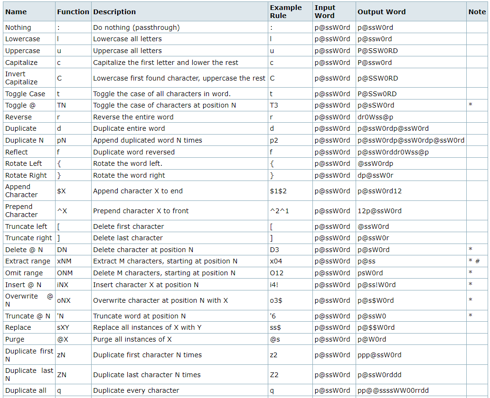
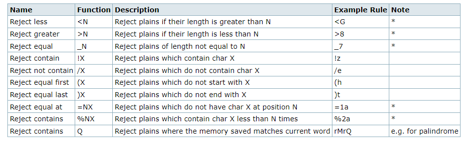

入门
Feature¶
Features.
- 超强的性能, 在本地测试极限性能的场景下, 能超过ffuf与feroxbruster的性能50%以上.
- 基于掩码的字典生成
- 基于规则的字典生成
- 动态智能过滤
- 全量gogo的指纹识别
- 自定义信息提取, 如ip,js, title, hash以及自定义的正则表达式
- 自定义无效页面过滤策略
- 自定义输出格式
- *nix的命令行设计, 轻松与其他工具联动
- 多角度的自动被ban,被waf判断
- 断点续传
- 通用文件, 备份文件, 单个文件备份, 爬虫, 主动指纹识别的完美结合
Usage¶
spray -h
将暂时完整的参数说明
Usage:
spray [OPTIONS]
Input Options:
--resume=
-u, --url= Strings, input baseurl, e.g.: http://google.com
-l, --list= File, input filename
--raw= File, input raw request filename
--offset= Int, wordlist offset
--limit= Int, wordlist limit, start with offset. e.g.: --offset 1000 --limit 100
-d, --dict= Files, Multi,dict files, e.g.: -d 1.txt -d 2.txt
-w, --word= String, word generate dsl, e.g.: -w test{?ld#4}
-r, --rules= Files, rule files, e.g.: -r rule1.txt -r rule2.txt
--append-rule= Files, when found valid path , use append rule generator new word with current path
--filter-rule= String, filter rule, e.g.: --rule-filter '>8 <4'
Function Options:
-e, --extension= String, add extensions (separated by commas), e.g.: -e jsp,jspx
--exclude-extension= String, exclude extensions (separated by commas), e.g.: --exclude-extension jsp,jspx
--remove-extension= String, remove extensions (separated by commas), e.g.: --remove-extension jsp,jspx
-U, --uppercase
-L, --lowercase Bool, lower wordlist, e.g.: --lowercase
--prefix= Strings, add prefix, e.g.: --prefix aaa --prefix bbb
--suffix= Strings, add suffix, e.g.: --suffix aaa --suffix bbb
--replace= Strings, replace string, e.g.: --replace aaa:bbb --replace ccc:ddd
Output Options:
--match= String, custom match function, e.g.: --match current.Status != 200
--filter= String, custom filter function, e.g.: --filter current.Body contains 'hello'
--extract= Strings, extract response, e.g.: --extract js --extract ip --extract version:(.*?)
-f, --file= String, output filename
-F, --format= String, output format, e.g.: --format 1.json
--fuzzy-file= String, fuzzy output filename
--dump-file= String, dump all request, and write to filename
--dump Bool, dump all request
--auto-file Bool, auto generator output and fuzzy filename
--fuzzy String, open fuzzy output
-o, --probe= String, output format
Plugin Options:
-a, --advance Bool, enable crawl and active
--active Bool, enable active finger detect
--bak Bool, enable bak found
--file-bak Bool, enable valid result bak found, equal --append-rule rule/filebak.txt
--common Bool, enable common file found
--crawl Bool, enable crawl
--crawl-depth= Int, crawl depth (default: 3)
--crawl-scope= Int, crawl scope (todo)
Request Options:
--header= Strings, custom headers, e.g.: --headers 'Auth: example_auth'
--user-agent= String, custom user-agent, e.g.: --user-agent Custom
--random-agent Bool, use random with default user-agent
--cookie= Strings, custom cookie
--read-all Bool, read all response body
--max-length= Int, max response body length (kb), default 100k, e.g. -max-length 1000 (default:
100)
Modify Options:
--rate-limit= Int, request rate limit (rate/s), e.g.: --rate-limit 100 (default: 0)
--force Bool, skip error break
--check-only Bool, check only
--recursive= String,custom recursive rule, e.g.: --recursive current.IsDir() (default:
current.IsDir())
--depth= Int, recursive depth (default: 0)
--check-period= Int, check period when request (default: 200)
--error-period= Int, check period when error (default: 10)
--error-threshold= Int, break when the error exceeds the threshold (default: 20)
--black-status= Strings (comma split),custom black status, (default: 404,400,410)
--white-status= Strings (comma split), custom white status (default: 200)
--fuzzy-status= Strings (comma split), custom fuzzy status (default: 403,500,501,502,503)
--distance=
Miscellaneous Options:
--deadline= Int, deadline (seconds) (default: 999999)
--timeout= Int, timeout with request (seconds) (default: 2)
-p, --pool= Int, Pool size (default: 5)
-t, --thread= Int, number of threads per pool (default: 20)
--debug Bool, output debug info
-q, --quiet Bool, Quiet
--no-color Bool, no color
--no-bar Bool, No progress bar
-m, --mod=[path|host] String, path/host spray (default: path)
-c, --client=[fast|standard|auto] String, Client type (default: auto)
Help Options:
-h, --help Show this help message
QuickStart¶
基本使用, 从字典中读取目录进行爆破
spray -u http://example.com -d wordlist1.txt -d wordlist2.txt
通过掩码生成字典进行爆破
spray -u http://example.com -w "/aaa/bbb{?l#4}/ccc"
通过规则生成字典爆破. 规则文件格式参考hashcat的字典生成规则
spray -u http://example.com -r rule.txt -d 1.txt
批量爆破
spray -l url.txt -r rule.txt -d 1.txt
断点续传
spray --resume stat.json
字典生成¶
基于掩码的字典生成¶
为了实现这个功能, 编写了一门名为mask的模板语言. 代码位于: mask.
一些使用案例
spray -u http://example.com -w "/{?l#3}/{?ud#3}"
含义为, /全部三位小写字母/全部三位大写字母+数字组成的字典.
所有的mask生成器都需要通过{}包裹, 并且括号内的第一个字符必须为?, $, @其中之一. #后的数字表示重复次数, 可留空, 例如{?lu} , 表示"全部小写字母+全部大写字母"组成的字典.
?表示普通的笛卡尔积. 例如{?l#3}表示生成三位小写字母的所有可能组合$表示贪婪模式, 例如{$l#3}表示3位小写字母的所有可能组合+2位小写字母的所有可能组合+1位小写字母的所有可能组合@表示关键字模式, 例如{@year}, 表示年份, 1970-2030年.
掩码的定义参考了hashcat, 但是并不完全相同. 目前可用的关键字如下表:
"l": Lowercase, // 26个小写字母
"u": Uppercase, // 26个大写字母
"w": Letter, // 52大写+小写字母
"d": Digit, // 数字0-9
"h": LowercaseHex, // 小写hex字符, 0-9 + a-f
"H": UppercaseHex, // 大写hex字符, 0-9 + A-F
"x": Hex, // 大写+小写hex字符, 0-9 + a-f + A-F
"p": Punctuation, // 特殊字符 !\"#$%&'()*+,-./:;<=>?@[\\]^_`{|}~
"P": Printable, // 可见的ascii字符
"s": Whitespace, // 空字符 \t\n\r\x0b\x0c
还支持通过数字表示命令行输入的字典序号, 例如
spray -u http://example.com -w "/{?0u#2}/{?01}" -d word0.txt -d word1.txt
其中{?0u#2}表示word0.txt的所有内容+所有大写字母笛卡尔积两次, {?01} 表示word0.txt + word1.txt的所有内容.
关键字目前还在不断完善中, 欢迎提供需求.
基于规则的字典生成¶
实现rule-base的字典生成器同样编写了一门模板语言, 代码在 rule
规则语法请参考 hashcat_rule_base
目前除了M(Memorize)的规则已经全部实现. 并且去掉了hashcat的一些限制, 比如最多支持5个规则, 字符串长度不能大于10等.
目前实现的规则如下表， 来自hashcat文档

目前支持的过滤规则如下表:

rule理论上应该要与hashcat的rule-base结果完全一致, 但如果与hashcat的结果不一致, 请提交issue.
这里有一些hashcat自带的规则示例, 但hashcat一般用来生成密码字典, 因此对于目录爆破的规则还需要重新积累.
现在能想到的能用来目录爆破领域的规则有
简单使用
spray -u http://example.com -d word.txt -r rule.txt
这行命令表示, 将word.txt中每一行都作为基础值与规则库rule.txt进行rule模板语言处理过后的笛卡尔积. 最终的字典总数量为 word行数 * rule行数.
spray -u http://example.com -d word.txt --rule-filter ">15"
这行命令表示, 指定字典, 并过滤掉长度大于15的字典.
使用函数装饰字典¶
内置了一些函数可以对字典进行装饰. 目前支持的如下:
mask生成阶段的函数
--suffix在字典后面添加后缀, 可添加多个, 与原有的字典组成笛卡尔积--prefix在字典前面添加前缀, 可添加多个, 与原有的字典组成笛卡尔积-e/--extension添加拓展名, 逗号分割
rule阶段的函数
-L/--lowercase将字典中的所有字母转换为小写-U/--uppercase将字典中的所有字母转换为大写--replace替换字典中的字符, 例如--replace aaa=bbb将字典中的a替换为b, 可以添加多个--replace--remove-extension删除字典中的文件扩展名, 逗号分割--exclude-extension排除字典中的文件扩展名, 逗号分割
字典生成器的优先级
将-w与-d解析成mask表达式
→ mask阶段的函数装饰器
→ mask字典生成器
→ rule字典生成器
→ rule过滤器
→ rule阶段的函数装饰器
→ 送入到channel中
Input¶
支持三种不同类型的输入:
-u/--url, 从命令行中添加url作为任务.-l/--list, 从文件中选择多个url作为任务. 将会自动开启并发模式, 支持多个任务同时进行, 并每个任务都有自己的keep-alive的连接池--resume, 选择stat文件断点续传
并且还有一些参数可以控制任务.
--offset, 字典偏移--limit, 限制的字典数量--deadline所有任务的最大时间限制, 超时了会保存当前进度的stat文件后退出--check-only仅根据url列表进行请求, 可以获取http基础信息, title, 指纹等. 类似httpx, 将会自动关闭keep-alive, 并进行一些性能优化.--force忽略掉被ban或被waf的判断, 强制跑完所有字典
速率限制¶
合理的速率配置能让spray的性能大大提升.
- 通过
-p/--pool配置并行的任务数, 每个url都会分配到一个独立的pool. - 通过
-t/--thread每个pool的并发数, 需要注意的是, thread与每秒实际发包速率无关 - 通过
--rate-limit配置每个pool的每秒发包上限速度. - 通过
--timeout配置每个请求的超时时间, 如果目标的waf会通过drop packet的方式响应, 适当调低timeout可以加快爆破速度.
爆破方式¶
通过-m 指定爆破方式, 默认为path, 当前支持path, host两种模式
path
path模式, 字典将会拼接到输入的url之后
host
host模式, 字典将会替换header中的host字段
client¶
当前spray采用了net/http与fasthttp作为备选的client, 后续还将兼容支持http2/http3的client.
因为fasthttp指定host时会进行一次dns解析, 导致出现报错, 因此, 在path爆破时将使用fasthttp. 在host爆破时将使用net/http.
fasthttp的性能远高于net/http, 因此不建议手动修改配置. 如果有相关的特殊需求, 可以通过-c/--client auto/standard/fast进行修改. 默认为auto.
使用fasthttp需要注意
如果目标使用了chunked, 那么fasthttp很可能无法正确获取解码后的body, 需要使用-c standard切换成go自带的net/http . 我原本以为能找到一个header去在client关闭chunk, 似乎并没有对应的方法.
请求自定义¶
--header "HEADER: aaa" 可添加自定义的header头, 可添加多个--header来添加多个header
--cookie "Session: sess" 可添加自定义的cookie, 可添加多个--cookie来添加多个cookie
--user-agent "Spray0.1.0" 可添加指定的UA
--raw file 类似sqlmap的-r参数 , 选择纯文本的请求模板, 后续的请求都会使用这个模板构造, todo
Output¶
spray默认输出到终端的格式是human-like文本. 并默认开启的 title获取 与 被动指纹识别 功能.
命令行输出案例
spray --no-bar -u http:/example.com -w "/{?l}" -a --extract url
[*] Parsed 26 words by /{?l} , 2023-01-04 11:16.30
[*] Loaded 1 urls from cmd , 2023-01-04 11:16.30
[*] Loaded 0 dictionaries and 0 decorators , 2023-01-04 11:16.30
[+] [baseline.index] http:/example.com/ - 200 - 6326 - 70ms [解决方案，一查就有] [nginx] , 2023-01-04 11:16.30
[+] [baseline.random] http:/example.com/PgtrqWohCJJLckw - 404 - 169 - 30ms [404 Not Found] [nginx] , 2023-01-04 11:16.30
[+] http:/example.com/static/js/chunk-libs.89fc8520.js - 200 - 0 - 116ms [nginx]
[+] http:/example.com/static/js/chunk-elementUI.80b6d1d0.js - 200 - 0 - 153ms [nginx]
[+] http:/example.com/static/js/app.72fc17fc.js - 200 - 68582 - 170ms [nginx] [ url:17 items ][ crawl:109 items ]
url:
http://www.w3.org/2000/svg
https://github.com/PanJiaChen/vue-admin-template/
https://panjiachen.github.io/vue-element-admin-site/#/
crawl:
https://github.com/PanJiaChen/vue-admin-template/
https://panjiachen.github.io/vue-element-admin-site/#/
https://beian.miit.gov.cn
/uploadFile/uploadFile
/userInfo/userInfo
/userAccount/userAccount
/userDocument/userDocument
/userMake/userMake
/userVip/userVip
/userInvite/userInvite
/userCollection/userCollection
/demand-form/demand-form
/login
/dashboard
/login?redirect=
/home
/userMake
/pay
/pay/success
/paySuccess
/pay/success
/PaySuccess
/wxLogin
/404
/prod-api/api
[+] http:/example.com/prod-api/api - 404 - 124 - 35ms [{\"timestamp\":] [focus:springboot] [nginx] [ crawl:/api ]
crawl:
/api
[*] [stat] http:/example.com took 0 s, request total: 125, finish: 26/26, found: 4, check: 0, failed: 0 , 2023-01-04 11:16.30
[*] [stat] http:/example.com 404: 120, 200: 3, , 2023-01-04 11:16.30
默认将会输出进度条, 但是进度条在windows的各种terminal下会有些输出bug. 可以通过--no-bar单独关闭进度条.
默认的命令行输出是带颜色的, 可以通过--no-color 关闭着色.
如果需要将spray的结果传递给其他工具, 需要关闭各种日志输出, 着色, 进度条等无用输出. 可以添加-q/--quiet关闭非必要输出.
如果需要查看所有细节, 可以添加--debug. 不论结果是否有效, 输出每个响应的细节
Probe¶
默认的baseline中还有许多数据默认状态下不会输出, 可以通过--probe参数去自定义想要输出的内容.
当前支持的probe有
- url
- host
- title
- redirect
- md5, body的MD5
- simhash, body的simhash
- mmh3, body的mmh3
- stat/status, 状态码
- spend, 耗费的时间, 单位毫秒
- extract 提取的结果
- frame 指纹, 默认开启被动指纹识别,
fuzzy输出¶
默认情况下, 被智能过滤中的模糊过滤掉的输出不会输出到命令行或者文件. 但模糊过滤的结果存在漏报/误报的可能, 因此很多时候还需要进行二次处理.
可以使用--fuzzy 打开命令行的模糊过滤结果输出.
或者--fuzzy-file filename 将模糊过滤的结果保存到单独的文件.
输出到文件¶
使用-f 指定输出文件名
默认输出到文件的格式为json, 可以使用-o full 强制修改为和命令行一样的格式
json输出格式案例
{
"number": 0,
"url": "http://example/static/js/app.72fc17fc.js",
"path": "//static/js/app.72fc17fc.js",
"host": "",
"body_length": 68582,
"header_length": 255,
"status": 200,
"spend": 405,
"title": "",
"frameworks": [
{
"name": "nginx",
"tags": [
"other"
]
}
],
"extracts": [
{
"name": "url",
"extract_result": [
"http://www.w3.org/2000/svg",
"https://github.com/PanJiaChen/vue-admin-template/",
"http://www.w3.org/2000/svg",
"https://beian.miit.gov.cn",
]
},
{
"name": "crawl",
"extract_result": [
"https://github.com/PanJiaChen/vue-admin-template/",
"https://panjiachen.github.io/vue-element-admin-site/#/",
"https://beian.miit.gov.cn",
"/uploadFile/uploadFile",
"/userInfo/userInfo",
"/userAccount/userAccount",
"/userDocument/userDocument",
"/userMake/userMake",
"/userVip/userVip",
"/userInvite/userInvite",
"/userCollection/userCollection",
"/demand-form/demand-form",
"/login",
]
}
],
"error": "",
"reason": "",
"valid": true,
"fuzzy": false,
"source": 5,
"depth": 1,
"hashes": {
"body-md5": "d7190390f194cd8a09cbdf132ee0bb6e",
"header-md5": "19bf7ec8a759066bdf8bbc1a90804244",
"raw-md5": "8c00b45ac0c33c51074270a47620318d",
"body-simhash": "af63bd4c8601b7ae",
"header-simhash": "9833941ee6ab8d6d",
"raw-simhash": "af63bd4c8601b7ae",
"body-mmh3": "2409784245"
}
}
除了-f 指定的文件名外, 还会根据任务类型生成***.stat的进度文件, 用来保存任务的状态与进度信息. 可以通过这个文件判断目标大致的状况.
stat输出案例
{
"url": "http://101.132.126.181/",
"counts": {
"200": 3,
"404": 104
},
"failed": 0,
"req_total": 109,
"check": 0,
"found": 4,
"filtered": 0,
"fuzzy": 0,
"wafed": 0,
"end": 26,
"offset": 0,
"total": 26,
"start_time": 1672802906,
"end_time": 1672802907,
"word_count": 26,
"word": "/{?l}",
"dictionaries": null,
"rule_files": null,
"rule_filter": ""
}
spray区分了不同类型的输出, 只有通过所有判断逻辑的结果才会输出到-f指定的文件中.
可以通过添加--auto-file 自动根据任务生成-f与--fuzzy-file文件名
如想保存所有数据进行二次分析, 可以添加--dump参数, 将保存所有数据到dump.json中. 可以--dump-file file 自定义保存的文件名.
提取器¶
spray有一个类似gogo的extract的功能. 用来从网页中提取特定数据.
可以通过--extract regexp, 自定义正则表达式去提取数据. --extract 可以添加多个.
extract也存在一些常用的预设, --extract ip
- url
- ip
- idcard
- phone
- header
- body
- cookie
- response
Advance Feature¶
自定义智能过滤¶
智能过滤的逻辑很难用几行文字描述, 可以见智能过滤逻辑
可以通过控制状态码列表自定义一部分的智能过滤逻辑.
--black-status这个列表内的状态码将被直接过滤, 默认400, 404, 410--white-status这个列表内的状态码将进入到标准的智能过滤逻辑, 默认200--fuzzy-status这个列表内的状态码才有资格进入到模糊过滤的逻辑, 默认403, 500, 501, 502, 503--waf-status这个列表的状态码与black-status类似, 但会标记为被waf, 默认493, 418
自定义过滤¶
智能过滤可能不能满足所有的场景, 某些情况可能非常离谱, 比如404页面返回200, 并且每次body相似度都不高. 这种情况下, 就可以使用自定义过滤功能.
spray中使用了 expr 作为表达式语言, 应该是市面上公开的性能最强的脚本语言了.
expr的语法介绍: https://github.com/antonmedv/expr/blob/master/docs/Language-Definition.md
expr语法和xray/github action中差不多, spray中绝大多数情况也用不到高级功能. 只需要了解最简单的等于/包含之类判断即可.
我们可以使用--match 定义我们需要的过滤规则, --match自定义的过滤函数将会替换掉默认的智能过滤. 也就是说, 开启了--match, 智能过滤就自动关闭了, 如果不想关闭智能过滤, 也提供了其他解决办法.
下面是一个简单的例子, 假设某个网站所有的404页面都指向公益页面, 我们想去掉所有的带"公益"字样的页面:
spray -u http://example.com -d word1.txt --match 'current.Body not contains "公益"'
这里的current关键字表示当前的请求的baseline. current.Body即为baseline结构体中的Body字段, baseline结构体可以见上文.
spray获取的baseline也会被注册到将本语言中. index表示index_baseline, random表示random_baseline, 403bl表示如果第一个获取的状态码为403的请求. 如果之前没有403, 则所有字段为空.
按照expr的规则, 可以直接通过.访问各种属性, 如果是嵌套的属性, 再加一个. 即可. 下面是Baseline的定义.
如果匹配的结果依旧不满意, 可以加上--filter 对match的结果进行二次过滤, --filter的规则与 --match 一致.
如果没有自定义--match , --filter将会对智能过滤的结果进行二次过滤.
手动配置过滤器¶
假设一个功能为api的站点， 他通过全局的错误处理将返回值统一改成200/405.
在spray中, 200是白名单状态码, 会跳过precompare, 直接到智能过滤的第二步, 开始内容的匹配. 如果内存中存在例如时间戳之类的随机数, 还会到第三步模糊过滤.
而405状态码则输出没有任何配置的状态码, 返回结果大概率会能到模糊过滤中, 如果405与200差异较小. 这种情况下就需要手动修改过滤规则了.
spray中修改过滤规则有很多中方式, 以这个例子进行简单介绍不同方式之间的差异.
方法1: 添加参数--black-status 405
这种方式较为暴力, 会在precompare阶段直接过滤掉, 跳过后续的阶段.
建议明确知道405状态码为无效页面的情况下使用. 果405页面的依旧有可能存在有价值的信息, 则不推荐使用这种方式.
方法2: 添加参数--fuzzy-status 405
405配置到fuzzy-status状态码列表中, 每次遇到405请求, 都会与405baseline进行对比.
这种方法是比较推荐的, 它只会微调智能过滤的逻辑, 随机目录的405状态码将会加入到基线中, 如果其他请求也遇到了几乎相同的405页面, 则可以认为是无效数据过滤掉.
可以保留智能过滤的全部功能, 并且不会有额外的性能损耗.
方法3: 使用表达式匹配--match current.Status != 405
这个表达式表示, 所有状态码不等于405的页面都会输出. 有些类似方法1中的black-status, 但是方法1并不会对其他智能过滤的规则做出修改.
--match将会重载默认的智能过滤的全部逻辑. 也就是说, 智能过滤的123阶段都会跳过, 取而代之的是这个表达式.
表达式的性能并不好, 并且配置起来也较为麻烦, 不推荐使用.
方法4: 使用表达式过滤--filter current.Status == 405
filter一般来说是比match的更高优先级的选择.
--filter与--match的区别在于, --filter作用于compare(包括智能过滤与match表达式过滤)的下一阶段. 通过compare结果将会由--filter进行二次过滤.
意味着, 如果仅设置了--filter, 那么智能过滤依旧生效, 并且可以过滤掉状态码为405的请求.
断点续传¶
spray支持断点续传, 可以通过--resume参数指定断点文件. 通过断点文件中记录的数据恢复进度.
为了更好的支持断点续传, spray监听了ctrl+c信号, 如果通过ctrl+c取消任务, 所有任务(包括已完成与没完成)的数据都会保存到stat结尾的文件中.
所以建议非必要情况不要使用kill -9 结束spray进程.
另外, 如果使用--resume依旧没有完成任务, 只要是正常的退出信号, 都会重写当前的stat文件, 以更新进度到当前扫描, 随时可以再次读取stat文件继续扫描任务.
断点续传支持比命令行更自由的字典配置. 每个任务都可以拥有独立的-w/-r/-d配置. 因此某些特殊情况下要进行批量操作, 可以通过脚本去构造对应的stat文件, 实现更加自由的任务配置.
递归¶
spray并不鼓励使用递归, 因为spray的定位是批量从反代/cdn中发现隐形资产. 不管是因为批量, 还是因为反代/cdn, 绝大多数的情况都用不到递归.
但为了兼容某些极为罕见的情况, spray依旧保留了递归的功能.
默认递归为关闭状态, 可以使用--depth 2选择递归深度开启递归模式.
默认的递归规则为current.IsDir(), 即所有的目录(结尾为/的结果)都会被递归.
也可以通过--recursive手动选择递归规则, 规则与filter/match相同的expr表达式 . 例如--recursive current.IsDir() && current.Status == 403表示, 递归所有状态码为403的有效目录.
附加功能¶
--crawl可以开启爬虫. 限定爬虫的深度为3, 且只能作用于当前作用域, 需要更加自由配置的爬虫配置请使用那几个headless爬虫.
注意
crawl的结果没有像jsfinder中一样拼接上baseurl, 因为从js中提取出来的结果通常不是最终的结果, 直接去访问大概率是404. 为了防止造成混淆, spray的crawl结果将保持原样输出. 但在爬虫递归时, 还是会尝试拼接上baseurl进行探测. 爬虫递归时会进行自动去重判断.
-
--active可以开启类似gogo的主动指纹识别. -
--bak会构造一个备份文件字典, 包含fuzzuli中的regular规则, 以及一些场景的备份文件字典 --file-bak作用于已经被判断有效的文件, 会根据有效值针对性的生成字典, 例如vim的备份等--common一些web的常见通用文件字典, 详情见链接中的common_file字段
-a/ advance 将同时上述开启所有功能, 并且功能之间还会交叉组合出一些惊喜.
如果还有类似的一些通用的fuzz手法, 欢迎提供issue.
TODO¶
- 模糊判断
- 断点续传
- 简易爬虫
- 支持http2
- auto-tune, 自动调整并发数量
- 可自定义的递归配置
- 参考fuzzuli, 实现备份文件字典生成器
- 支持socks/http代理, 不建议使用, 优先级较低. 代理下的keep-alive会有严重的性能下降
- 云函数化, chainreactors工具链的通用分布式解决方案.